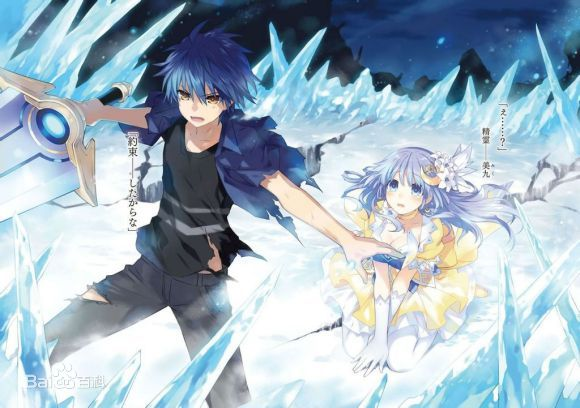
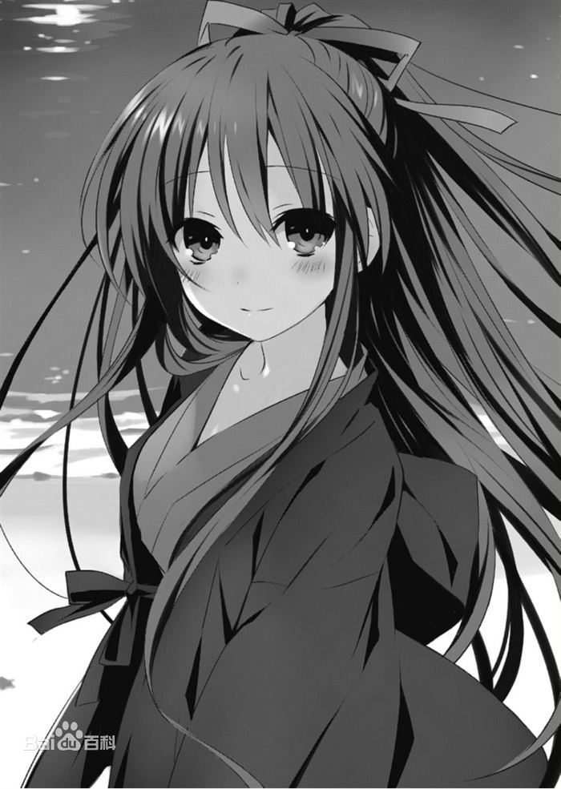
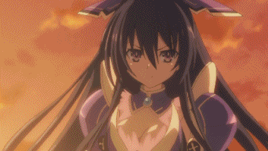
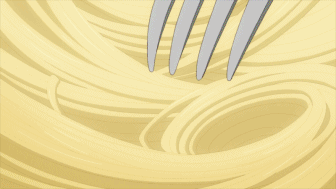
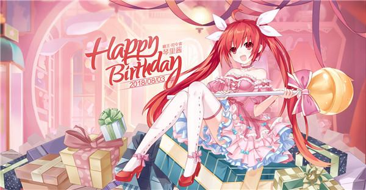
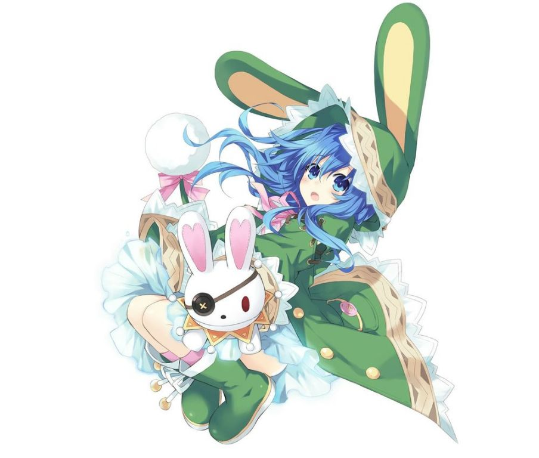
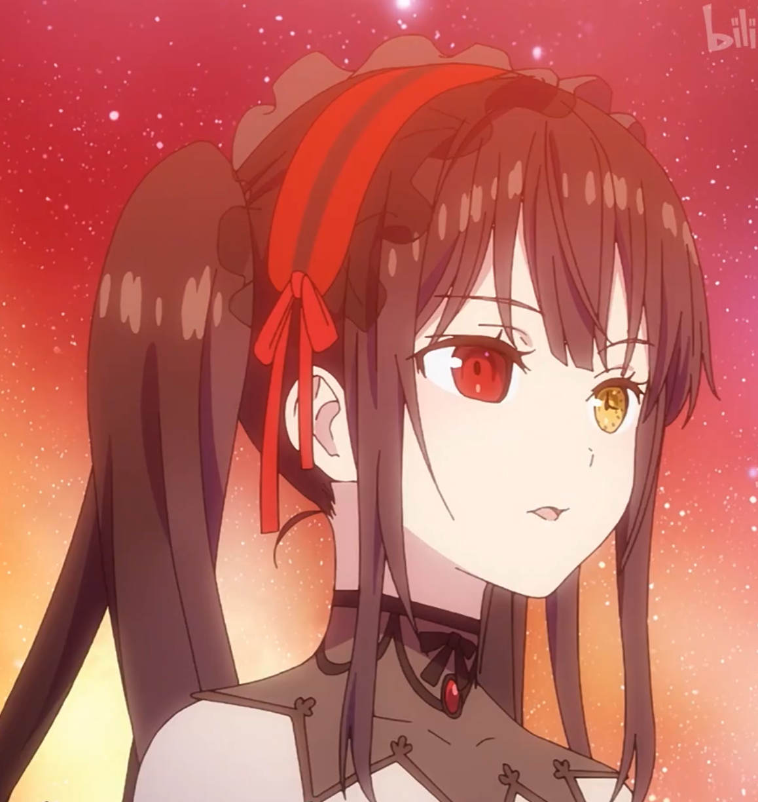

五河士道（いつか しどう）
本作男主角，都立来禅高中2年级生，16岁。
年幼时曾有被双亲抛弃，而后被五河家接继的过往经历，幼年时有自杀倾向，心理承受能力较弱。对其他人绝望的感触非常敏锐，像是对抱持着绝望的十香在初次见面即被其所察觉。
表面上看是一般所认知中极其普通的高中生，实际上却存有能透过接吻吸收、封印精灵的力量和能使用被封印精灵能力，遭受致命伤害时会自伤口点燃火焰，并伴随着再生、终而复活这样特殊的体质，被Ratatoskr半强迫地选为以对话沟通来避免精灵被杀害减少为目标的角色。本人最初也对这样的工作踌躇犹疑，但借由与十香与四糸乃的接触之后则渐渐变得想帮助精灵们，并决心以自己的意志担任与精灵沟通交涉的角色。
虽然说话的语调经常不是很好，但却是对有为难之人与悲伤之人绝不冷漠避之并为之敞开心胸的善良青年。
崇宫真士 士道的前身，30年前与澪相遇后为保护她被维斯考特所杀。后被澪吸收产下，重生为士道。 真那的哥哥，与五河龙雄为同学。夜刀神十香（やとがみとおか）
（第一精灵） 本篇女主角。识别代号：Princess（公主）
 外表年龄16岁，与迷团般的大爆炸一并现身于士道前的精灵少女，拥有一头及膝的黑色长发与水晶般不可思议色彩的眼睛。
士道对她的第一印象，就是那可以被称为暴力一般美丽。没有包含名字在内和自己相关的一切记忆，在第二次与士道相遇后，希望士道为她命名，士道基于两人第一次见面的日子（四月十日）而命名为「十香」。
由于每次出现都遭到人类攻击，使她对人类充满恐惧与敌意，一见到人就会攻击，但在与士道相遇后逐渐改变她对人的观感，变得非常喜爱人类的世界。
个性纯真可爱，天然呆，食量惊人，缺乏日常生活知识，如孩童般的对所有事物都充满好奇。在精灵力量被士道封印后经过拉塔托斯克假造户口后以转校生的身份转入他的班级，并暂时住进五河家中，之后搬进Ratatoskr建于五河家旁的特殊公寓。与折纸因各种缘由非常不合，对她总以全名称呼，每天都跟她围绕着士道争吵。
在士道暴走时发现自己对士道与对琴里等人的「喜欢」不同，甚至渐渐发现对士道感情的是胜过于「喜欢」的「爱慕」。
灵装为神威灵装·十番（Adonai Melekh）,用紫色的盔甲、如同公主礼服一般的衣服包裹全身，礼服的缝份、内里、裙摆部分则是由非物质的、绽放不可思议光芒的光膜所构成，头上佩戴有紫色的水晶头饰。天使为剑之天使‐鏖杀公（Sandalphon/サンダルフォン））,是一把收在王座椅背中的双刃巨剑，当全力解放时的最后之剑（最后の剣/ハルヴァンヘレヴ）是由鏖杀公将王座吸收合成的一把全长超过十米的巨剑，一挥动就能轻易将大地一分为二。 剧场版中得到大家的帮助，展现了聚合各精灵特点的特殊灵装 神威灵装·十番 ，拿出了与鏖杀公成对的另一把剑灭杀皇（Shekinah/シェキナー）。 与其他精灵不同，并非寄宿灵结晶的人类转化而成，而是由灵结晶自行生成的原生精灵。 夜刀神天香 （第一精灵） 识别代号：Princess（公主） 由崇宫澪制造的灵结晶直接诞生出的精灵，被澪用轮回乐园变回灵结晶打算捏碎重新造一个时，澪由于这个灵结晶产生的是纯粹的精灵，是与其相同的存在而没被销毁，此后与之后诞生的另一人格十香共用一个身体，作为十香的反转体人格出现。 灵装为全紫黑色的盔甲礼服。显现魔王为剑之魔王‐ 暴虐公（Nahema/ナヘマー） ， 暴虐公 是一把漆黑的单刃巨剑，威力强过 鏖杀公 ，当全力解放时的 终焉之剑（Paverschlev/ペイヴァーシュヘレヴ） 是暴虐公将王座吸收合成的一把全长超过十米的巨剑。威力强过前者。但缺陷是灵力消耗过大，所以无法像 最后之剑 一样可以多次斩击 [5] 。鸢一折纸（とびいち おりがみ）
（第八精灵）本篇女主角之一，识别代号：Angel（天使），反转体识别代号：Devil（恶魔）
士道的同班同学，有着纯白如雪的短直发，经常面无表情如人偶般的少女。成绩超群绝伦，经常是全年级的榜首。在全国性的模拟考中也曾摘得首位。另外也是运动能力全能的完美少女。对他人十分冷淡，叫唤他人时基本上都是使用全名，在招待士道到自己的家过后即改以名字称呼之。
另一方面也是陆上自卫队对抗精灵部队AST的成员，位阶为上士，年轻但却有高作战能力。因精灵现身之故而令双亲命丧，因此憎恨精灵此一存在的一切,展开以消灭精灵为最终目标的持续征战，但也为了达到此一目标而采取了许多鲁莽的行动。
对士道有着好感，在士道一次训练中被告白从此以士道的恋人自居，对士道的实妹真那自称为是恋人，使其称呼自己为大嫂。
于第10卷中精灵化，代表卡巴拉生命树的“王冠”。灵装是呈现雪白的礼服装状的神威灵装·一番（エヘイエーアドナイ・メレク），识别名为天使（Angel）（エンジェル），天使为光之天使—灭绝天使 [7] （Methratton），是连成王冠形状的羽毛，可通过变换形态使用 日轮·天翼·光剑·炮冠 等技能。 反转后识别名为恶魔（Devil），灵装变为蓝黑色的丧服，显现魔王为光之魔王—救世魔王（satan），救世魔王是一顶黑色王冠状的漆黑羽毛，可不受控制自由行动和攻击，威力强过 绝灭天使 [8]
五河琴里（いつか ことり） （第四精灵） CV：竹达彩奈 识别代号：Efreet（炎魔）。
本片女主角之一。男主角五河士道的义妹，14岁、双马尾的可爱少女，原作中表现色为暗红色，插画发色为血红。另一层身份是Ratatoskr的司令官。
有双重性格，绑上白色缎带时就是天真开朗的「妹妹模式」，换上黑色缎带后性格就会突变成为毒舌又冷酷的「司令官模式」。
但这并非真正意义上的双重人格，会因发带而改变行为方式是由于小时候因想成为令哥哥喜爱的坚强的妹妹而接受了某人的力量，却误将士道卷入，在「某人」指点下为了拯救士道而给其做了人工呼吸，自身力量也被封印，之后接受了士道迟来的生日礼物黑色缎带，并有了「只要戴着这个就是坚强的孩子」的约定，即「司令官模式」。
非常喜欢珍宝珠（一种棒棒糖），在司令官模式时基本无时无刻不叼在嘴里。
强迫士道学习男女交际的方法，一但失败就会毫无留情的揭开士道过去的黑历史。当士道和精灵进行交涉（约会）时会在Ratatoskr的司令室内进行监视，并透过耳机向士道给予指示,不过经常会给出无谓的命令而导致士道陷入危机。
灵装是一件像羽衣般的红色和服 神威灵装·五番（Elohim Gibor） ，并在头上戴上白色的牛角头饰。天使为火之天使‐ 灼烂歼鬼（Camael） 是一把带着火焰的巨大战斧，可转换为炮管型态 炮（Megiddo） ，具强大穿透力。除此之外还拥有如同不死鸟般的再生能力，就算受到再重的伤也能完好如初，但会让本身产生炙热感。缺陷是琴里自己会产生出一种无法控制的破坏冲动，容易失去理智而化为大开杀戒的战斗狂.冰芽川四糸乃（よしの）
（第二精灵） 小说第二卷登场的人物。识别代号：Hermit（隐居者）
长相宛若法国娃娃般美丽的蓝发少女，外表年纪13岁，手里拿着一个样子滑稽的兔子手偶。生性温驯而胆小怕生，几乎不敢与人直接对话，手偶「四糸奈」起初被认为是腹语术，事实上是因为四糸乃灵力链接上的手偶而存在的独立人格。
除此之外四糸奈也是四糸乃的精神依靠，为避免自身的恐惧使力量失控而创造出来的坚强形象，而这也是基于四糸乃不想伤害他人的温柔。力量被士道封印后暂时住在 佛拉克西纳斯 中，开始练习由自己主动开口说话。
能操控水与寒气，因这项特质使她每次现界后周围总是倾盆大雨。
灵装是一件饰有兔耳的绿色斗篷 神威灵装·四番（El） ，天使为冰之天使- 冰结傀儡（Zadkiel) ，
是能冻结周围的巨大的兔子人偶，能以夹带灵力的雨水及寒气张开防御用的结界，任何在范围内带有灵力的事物都被冻结,连同显像装置制造的随意领域也能冰冻，其上级技能为 冻铠(Siryon) ,将天使化为盔甲包裹着自己的身体，能使力量更为集中强大。 反转后灵装变为黑色的兔子斗篷并带着与四糸奈一样的眼罩，魔王为黑色的巨偶（设定不明，只出现于画集中） 虽然现界引发的空间震较弱，但因为能操控水与寒气，所以她每次现界后周围总是阴雨绵绵。尽管自身成为追杀目标，却因不愿伤害他人而一直逃避战斗。 [10] 。时崎狂三（ときさき くるみ）
（第三精灵） 小说第三卷登场的人物。识别代号：Nightmare（梦魇）
突然转入来禅高中的转校生，在众人前自称精灵。平时左眼被长刘海遮挡而无法看清，身着灵装后可以看清隐藏在长发下的左眼——时钟之眼。
刚开始就对士道异常的亲密，其实她的目的是为了「吃掉」士道。
对杀死人命毫不抗拒，至今已被确认由狂三亲手杀死的人超过一万名以上，被认为是最邪恶的精灵，虽然崇宫真那曾经成功杀死她，但过了一阵子后又会毫发无伤再度出现，而她就一直在杀人与被杀的轮回中徘徊。 虽自称自己喜欢杀人也喜欢被杀，但曾因士道的话而产生动摇。
灵装是一件黑色与血色相间的哥特装 神威灵装·三番（Elohim ） ，发型也改为一长一短的双马尾，齐刘海遮住左眼的一半，露出来的左眼瞳孔是一个金色时钟，随能力的发动而转动。天使为时之天使-- 刻刻帝（Zafkiel） 。是超过有身高两倍的巨大时钟，刻刻帝的长针和短针分别是古式步枪和手枪，将刻刻帝的能力作为子弹发射出去，时钟上的数字分别有各种不同的强大能力，但每次使用会消耗自己的寿命。 反转后灵装变为纯白的军装。魔王为 狂狂帝（Rophocale） ，使用以黄道十二宫为名，操控空间的十二种子弹。 行动的目的是为了发动【十二之弹】回到三十年前杀死始源的精灵，为此一直在寻找知晓的初始精灵存在并被DEM社囚禁的第二精灵。最终找到因士道暴走而逃出来的唯一知晓初始精灵存在的全知精灵—二亚，并从二亚那获得有关初始精灵情报，但得到情报后却发现自己没有战胜始源精灵的能力，便决定改换目标，回到更久远的过去抹杀令始源精灵出现的三人——艾扎克·维斯考特、艾伦·马瑟斯、艾略特·鲍德温·伍德曼。并称这三人为「罪人」。